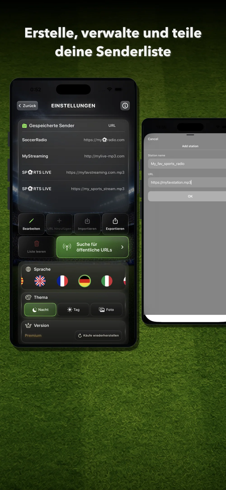
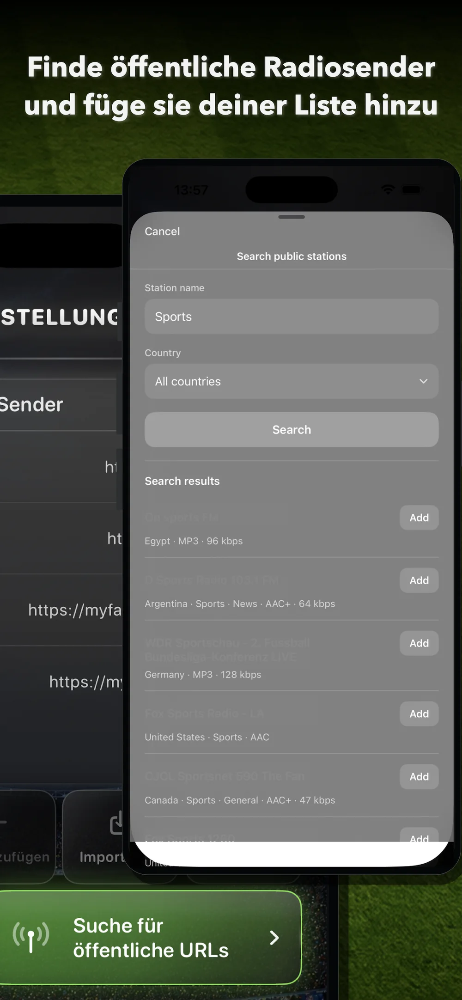
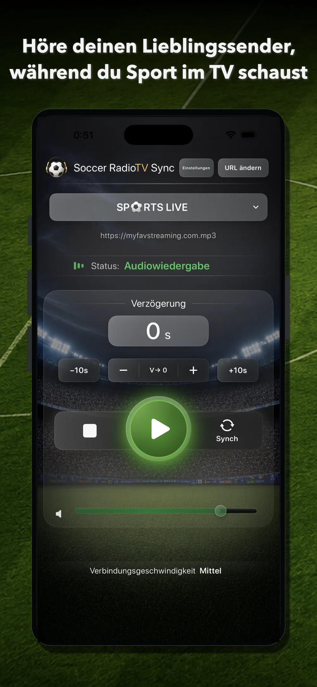
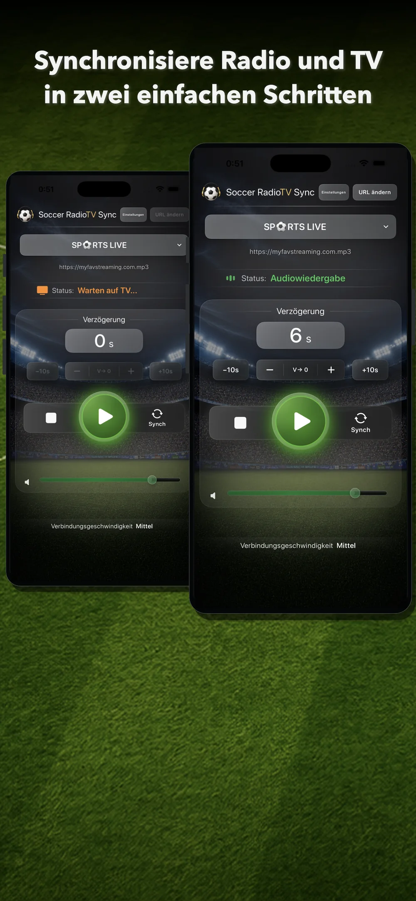
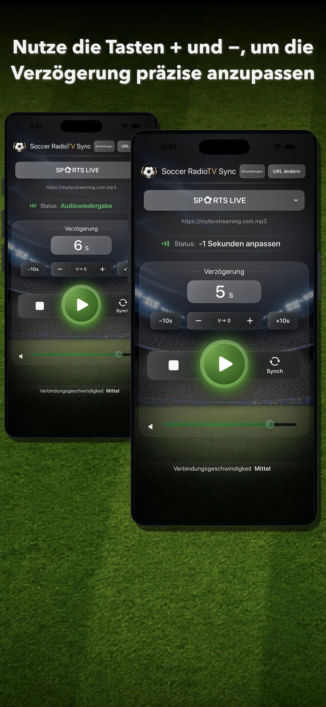
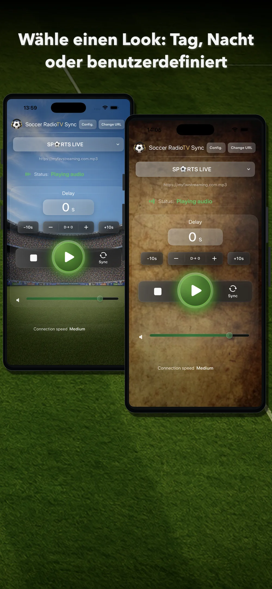

1. Sender auswählen oder hinzufügen
Zum Start brauchst du einen kompatiblen Online-Radiostream.
- Suche öffentliche Sender über die integrierte Suche.
- Füge eine URL manuell hinzu.
- Importiere eine Senderliste.
Unter Einstellungen kannst du gespeicherte Sender verwalten, die Liste bearbeiten, neue URLs hinzufügen sowie Listen importieren, exportieren oder vollständig löschen.

2. Öffentliche Sendersuche verwenden
Version 2.0 enthält eine öffentliche Sendersuche auf Basis von Radio Browser.
- Öffne Einstellungen.
- Tippe auf Öffentliche URL-Suche.
- Gib den Sendernamen, ein Stichwort oder die gesuchte Inhaltsart ein.
- Wähle bei Bedarf ein Land, um die Ergebnisse einzugrenzen.
- Tippe auf Suchen.
- Prüfe die Ergebnisse.
- Tippe auf Hinzufügen, um einen kompatiblen Sender in deiner Liste zu speichern.
Danach kannst du ihn auf dem Hauptbildschirm auswählen.

3. URL manuell hinzufügen
Wenn du eine direkte URL für einen kompatiblen Stream hast, kannst du sie manuell hinzufügen.
- Öffne Einstellungen.
- Tippe auf URL hinzufügen.
- Gib den Sendernamen ein.
- Füge die URL ein.
- Tippe auf OK.
Der Sender wird in deiner Liste gespeichert. So kannst du kompatible Streams von klassischen oder digitalen Radiosendern, Kommentatoren, Creators oder Diensten hinzufügen, die Online-Radioaudio bereitstellen.
4. Sender auf dem Hauptbildschirm auswählen
Öffne auf dem Hauptbildschirm die Senderauswahl und wähle den gewünschten Sender.
Wenn ein Sender mehrere URLs oder Server besitzt, kannst du mit der Taste URL wechseln zwischen ihnen umschalten.
Die Server desselben Senders können unterschiedliche Latenzen haben. Wenn der Radioton nach dem TV-Bild ankommt, probiere eine andere URL.

5. Play tippen
Tippe auf Play, um die Wiedergabe zu starten.
In Version 2.0 beginnt die Wiedergabe nach dem Tippen auf Play früher. Dadurch ist die App schneller und direkter zu bedienen.
Während der Wiedergabe wird der Status Audiowiedergabe angezeigt.
6. In zwei Schritten synchronisieren
Die Taste Synch kann die benötigte Verzögerung automatisch berechnen.
Schritt 1
Tippe auf Synch, sobald du im Radio einen eindeutig erkennbaren Moment hörst. Zum Beispiel: einen Torschuss, ein Foul, eine Ecke, eine klare Spielszene oder einen leicht identifizierbaren Kommentar.
Die App wechselt zu Warten auf TV.
Schritt 2
Sobald du denselben Moment im Fernsehen siehst, tippst du erneut auf Synch.
Die App berechnet die verstrichene Zeit und wendet die entsprechende Verzögerung auf das Radio an. Ab diesem Moment sollte der Kommentar zum Bild passen.

7. Verzögerung manuell anpassen
Nach der Synchronisierung kannst du das Ergebnis mit den manuellen Reglern feinjustieren.
- Mit + erhöhst du die Verzögerung leicht.
- Mit – verringerst du die Verzögerung leicht.
- Mit +10s erhöhst du die Verzögerung schnell.
- Mit –10s verringerst du die Verzögerung schnell.
- Mit V→ 0 setzt du die Verzögerung auf null zurück.
Diese Regler helfen, wenn das Radio während des Spiels etwas vor- oder nachläuft.

8. Wann +10s und –10s sinnvoll sind
Die Tasten +10s und –10s sind für größere Änderungen gedacht.
Sie sind hilfreich, wenn:
- du den TV-Sender gewechselt hast;
- du den Server gewechselt hast;
- du den Radiosender gewechselt hast;
- das TV-Bild einige Sekunden eingefroren ist und die Synchronisierung verloren ging.
Bei kleinen Abweichungen sind + und – meist besser geeignet.
9. Listen erstellen und verwalten
Unter Einstellungen kannst du:
- Sender speichern;
- URLs hinzufügen;
- Einträge bearbeiten;
- Listen importieren;
- Listen exportieren;
- Listen teilen;
- die gesamte Liste löschen;
- die Sprache ändern;
- das visuelle Design ändern;
- Käufe wiederherstellen.
So kannst du deine eigene Senderliste aufbauen und mehrere Alternativen für jede Übertragung bereithalten.
10. Visuelles Design auswählen
Mit Soccer RadioTv Sync 2.0 kannst du das Aussehen der App wählen.
Tagmodus
Ein hellerer Bildschirm mit Stadionatmosphäre.
Nachtmodus
Ein dunklerer Bildschirm mit geringerer visueller Intensität.
Eigener Hintergrund
Verwende dein eigenes Bild als Hintergrund des Hauptbildschirms.
Das Design lässt sich unter Einstellungen ändern.

12. Käufe wiederherstellen
Wenn du Premium bereits gekauft hast oder Nutzer einer früheren kostenpflichtigen Version warst, kannst du unter Einstellungen die Funktion Käufe wiederherstellen verwenden.
Damit wird der Premium-Zugang wiederhergestellt, wenn du die App neu installierst oder mit derselben Apple-ID auf ein anderes Gerät wechselst.
13. Tipps für eine gute Synchronisierung
- Wähle einen Radiostream, der vor dem TV-Bild ankommt.
- Nutze Synch bei einem klar erkennbaren Moment.
- Wenn das Ergebnis fast stimmt, korrigiere es mit + oder –.
- Bei einer großen Abweichung nutze +10s oder –10s.
- Wenn eine URL nicht gut funktioniert, probiere einen anderen Server desselben Senders.
- Wenn das TV-Bild einige Sekunden einfriert, stoppe die Wiedergabe nicht. Synchronisiere während des laufenden Spiels erneut, wie zu Beginn.
- Speichere mehrere nützliche URLs für deine Lieblingssender.
14. Wichtige Einschränkungen
Soccer RadioTv Sync ist hauptsächlich für Streaming-TV gedacht, wenn das Bild später als das Online-Radio ankommt.
Bei Antennenfernsehen oder Satellit kann das Timing anders sein, weil das Bild möglicherweise vor dem Online-Radio ankommt. Soccer RadioTv Sync ist vor allem für Fälle entwickelt, in denen das Radio verzögert werden muss, um zu einem später eintreffenden TV-Bild zu passen.
Die App kontrolliert weder externe Übertragungen noch die Server der Radiosender. Verfügbarkeit, Qualität und Latenz können je nach Stream variieren.
Wenn ein Sender seine URL ändert, die Übertragung beendet oder kein kompatibles Format anbietet, musst du möglicherweise eine andere URL oder einen anderen Sender verwenden.
15. Kurzfassung
- Sender hinzufügen oder suchen.
- Sender auf dem Hauptbildschirm auswählen.
- Play tippen.
- Synch tippen, wenn du einen Moment im Radio hörst.
- Erneut Synch tippen, wenn du ihn im TV siehst.
- Mit +, –, +10s oder –10s feinjustieren.
- Sport mit synchronisiertem Radiokommentar genießen.